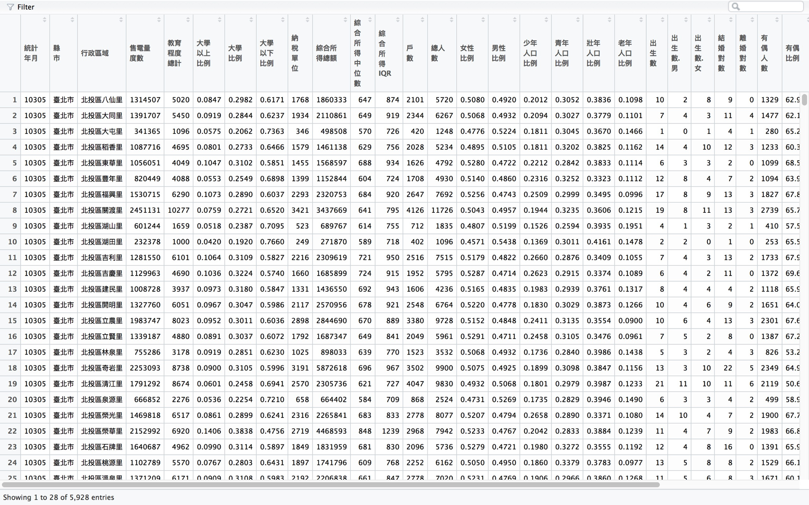
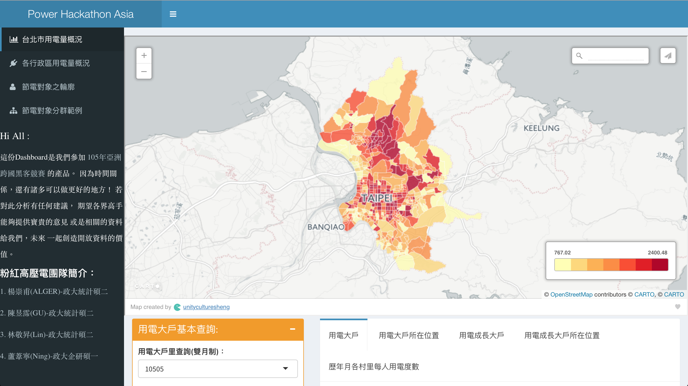

2016年9月22日
Speaker
Yupei Chen
國立政治大學統計研究所碩二
Experience
- 玉山金控資料探勘實習生(2015.1-2015.2)
- HTC Data Insight Management Summer Intern(2015.7-2015.8)
- 全國大專院校商業個案大賽(ATCC) IBM組企業第三名
- R 軟體翻轉教室教學助教
- 健保資料庫分析團隊
- DSP 實習研究員
Skills
- R、SQL、SAS
節電？從何節起？
人人喊節電，各個沒實踐
Problem
- 夏季尖峰用電年年創新高
- 政府每年編列高額節電預算效果不甚顯著
- 台電提核一廠2號機將不停機，後年提前除役！新聞來源
Solution
- 幫助政府能更有效率的分配節電預算
- 運用開放資料找出問題間的關聯性
讓資料來說話
資料盤點
- 電力資料 X 人口統計 X 經濟指標

資料整合
- 五大資料集：村里電力、戶籍人口、教育程度、生死結離、所得總額

Raw Data

資料分析
- 資料蒐集、整合與清理
- 變數選取與合併
- 臺北市整體與各行政區用電量概況(探索性資料分析)
- 六大指標：
- 女男比、平均教育程度、扶老比、有偶比例、每戶平均用電度數、綜合所得中位數
- 分群分析 X 雷達圖(臺北市456個村里分為8群)
- 視覺化：地圖 X 用電量
- 電力分析 Dashboard – Easytricity
未來如果可以…
給政府的小小淺見
- 更細緻化最小單位
- 村里 to 最小統計區
- 月資料 to 日資料
- 工業用電、民生用電、商業用電
- etc.
- 更完整的資料年份
- 更即時的資料資訊
- 繼續優化 Easytricity !
It's demo time !
Our products

Our products
- Easytricity
